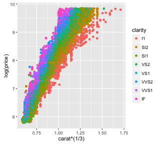
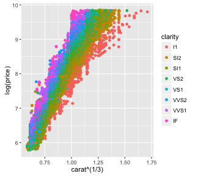

Purpose
- Demonstrate R data product using shiny apps and slidify
- Prediction of diamond price using a linear model
- Interactive selection of sample size and predictor variables
Data set
library(ggplot2); data(diamonds)
- Data set consists of 10 variables and 53940 observations.
## [1] "carat" "cut" "color" "clarity" "depth" "table" "price"
## [8] "x" "y" "z"
 
